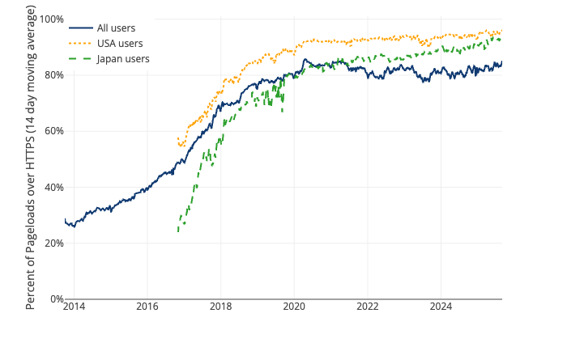
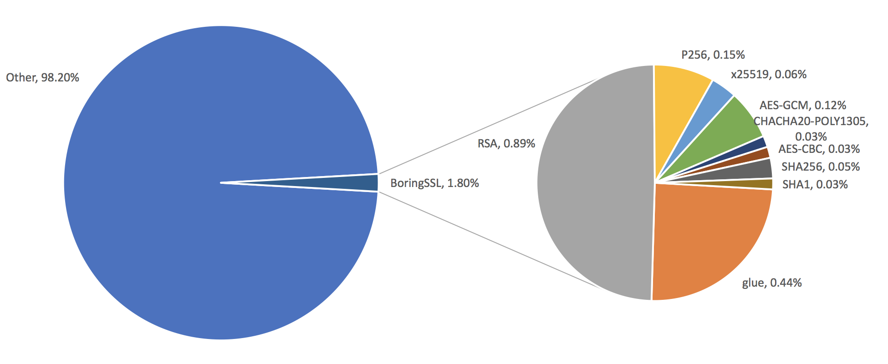
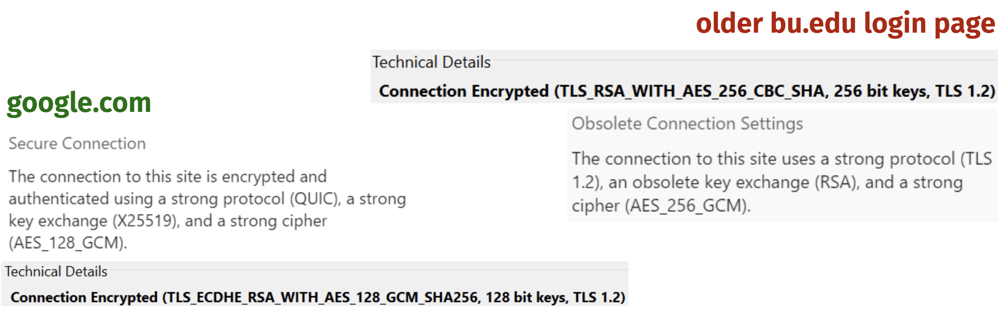
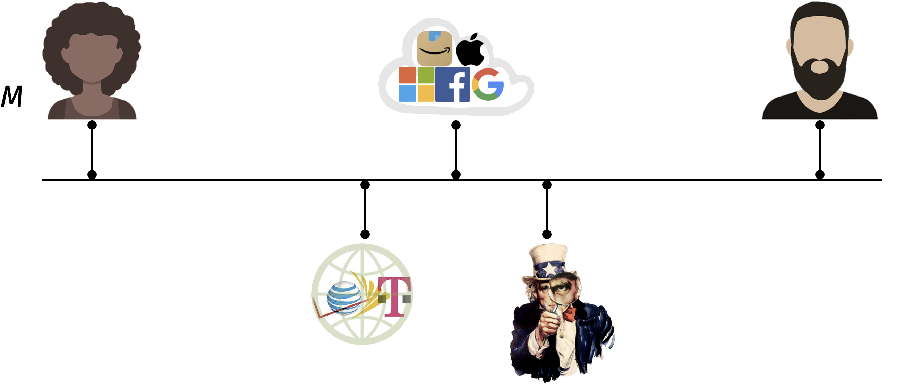
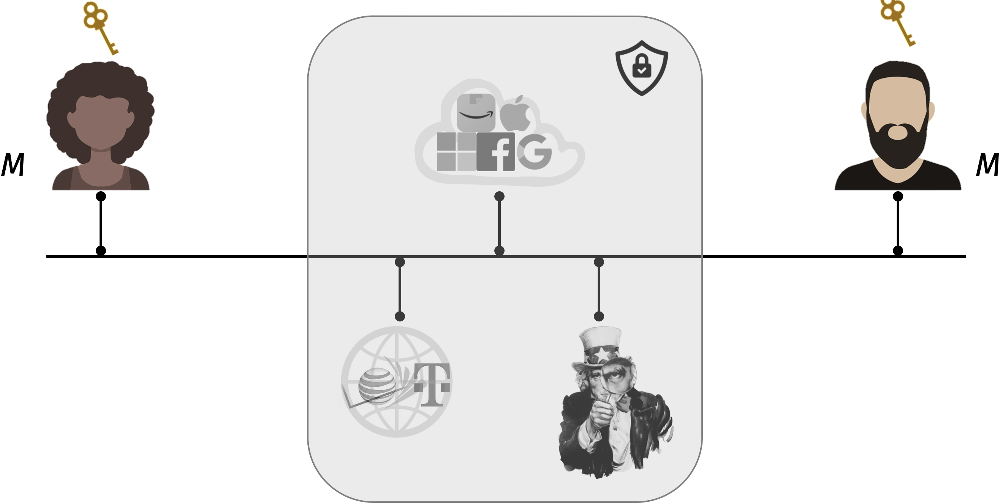
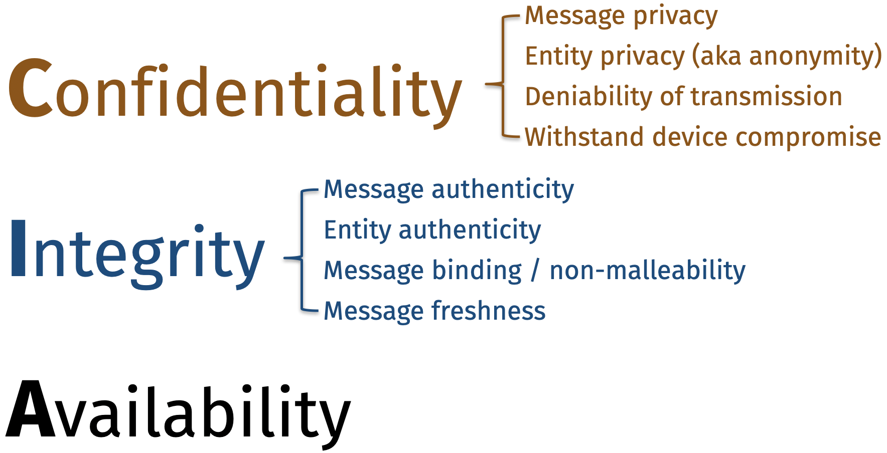
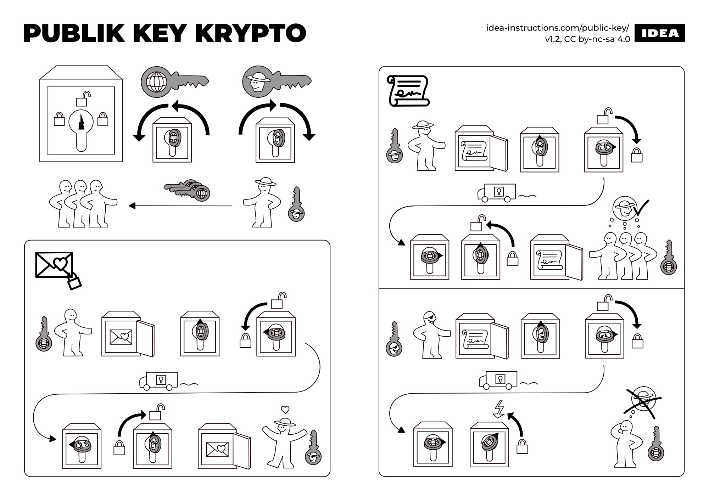

This is a course about crypto… which is an abbreviation with (at least) three different endings.
Cryptocurrencies
Cryptography
Cryptology
Here is a question to start us off in this course: what is cryptology?
Cryptology comes from two Greek word parts:
kryptos, meaning “secret” or “hidden”
logy, meaning “the study of”
So: the goal of cryptology is to study the art of keeping secrets.
In its modern form, crypto uses hard math problems as a way to encode data in order to restrict
who can use it,
how they can use it, and
sometimes even when and where they can access it.
“Cryptography is how people get things done when they need one another, don’t fully trust one another, and have adversaries actively trying to screw things up.”
All cryptographic primitives that I will show you in this course have been vetted through decades of cryptanalysts by thousands of people. No single one of us can compete with that.
“Don’t roll your own crypto.”
– (Every cryptographer)
Crypto is a scientific field at the intersection of many disciplines. To accomplish their goals, cryptographers use:
Engineering techniques to produce vetted, secure software implementations of their protocols (often studied in industry)
Algorithms techniques in their protocol designs (often studied in European academia)
Complexity theory to demonstrate security reductions from new protocols to more well-studied ones (often studied in U.S. academia)
Mathematics for cryptanalysis (often studied in government)
This class will primarily make use of the first two skills: software engineering and algorithms.
While we won’t delve into the full depth of math used in cryptanalysis, we will often use concepts from algebra and probability.
1.2 Crypto and data science
This is also a course about how crypto can be used within data science.
It’s likely that you have already used crypto in all of your data science projects, perhaps without explicitly thinking about it.
Lock icon on kaggle.com
In this image, the lock icon in the web browser means that my computer has a protected connection to the kaggle.com servers. This means that nobody else on the internet can
tamper with the dataset in transit; i.e., data integrity is maintained
see which dataset I am downloading from kaggle.com; i.e, the data remains confidential
Note though that the kaggle.com servers can see what you are doing on their website. We will see at the end of the semester how even this can potentially be avoided.
Evolution of the Internet
Using crypto is an essential part of providing security over the Internet, which has always been designed as an open network. There is no physical wire that directly connects your computer with the kaggle.com server. Instead, the data flows through several other computers along the way.
Here is a picture of all of the computer servers connected to the Internet in 1968.
Growth of the Internet over time (source: Wikipedia)
But the design of the Internet has fundamentally remained the same.
“The Internet is just the world passing notes in a classroom.”
– Jon Stewart
Why crypto matters
Since crypto is used behind-the-scenes when protecting data at rest (on a hard drive) and in transit (over the Internet), it is essential that the crypto is done right for a few reasons.
We use crypto all the time, so it must be automatic and fast. If the system is cumbersome or slow to use, then people will ignore it and move to other, less secure options.

Percentage of web pages loaded by Firefox using HTTPS (source: Let’s Encrypt)

How “expensive” is crypto anyway? (source: Cloudflare)
Bad crypto (say that is vulnerable to decoding or tampering by unauthorized parties) can lead to universal, covert breaches of security. Moreover, everyone will have a false sense of security.

Comparing crypto primitives used in google.com and a prior version of bu.edu
Cryptography has social, legal, and political impacts… and conversely, crypto is influenced by society, the law, and public policy
1.3 The power of crypto
Crypto is probably best well-known for encryption, which hides messages. Encryption schemes have been designed and used by governments for centuries.
Today, encryption allows for confidential data exchange over the Internet. Consider two people who (following the typical convention in crypto) we will call Alice and Bob. Alice can send a chat message, email, file, or database across the internet so that only Bob can read it.
Since the Internet is just “the world passing notes in a classroom,” here is a simplified but realistic picture of how it looks today.

Internet communication
Even though the entities in the middle of the picture have significantly more computing power, encryption allows Alice and Bob to communicate securely because they have one thing that the others do not: a cryptographic key.

Internet communication, with encryption
As a result, encryption is a powerful tool with immense social consequences.
“Cryptography rearranges power: it configures who can do what, from what.”
In particular, having the secret key gives someone the power to decrypt and read a message.
Goals of cryptography
Crypto can be used in many applications beyond network transmissions on the Internet. Still, this example highlights a general theme that we will see in this course:
Crypto is a social science that masquerades as a mathematical science.
The goal of this course is to use the tools from math, computer science, and data science in order to design systems that help people.
Every cryptographic system attempts to provide (some or all of) the following three objectives, which are collectively referred to as the “CIA triad.”
Confidentiality: hiding data
Integrity: preventing or detecting tampering of data
Availability: preventing censorship of data
Admittedly, these three objectives are both underspecified (lacking mathematical rigor) and overloaded (the terms have many different sub-meanings).
One goal of this course is to make specific, precise claims of security.

1.4 Protocols and primitives
The cryptographic tools we will design over the course of the semester fall into two categories:
Elegant protocols that accomplish tasks that people want
Utilitarian primitives that achieve concrete mathematical security objectives
To illustrate the difference between protocols and primitives, let me provide a brief overview of cryptocurrencies like Bitcoin, which we will study in detail in Unit 2.
This is not a finance course on cryptocurrencies. You should not expect to be taught how to invest in cryptocurrencies or how to become a billionaire overnight (or ever, for that matter).
In fact, the cryptocurrency market is still in its infancy and is incredibly volatile. Investing in cryptocurrencies is a good way to lose money. So this course doesn’t offer any investment advice, except in this sentence: I advise you not to invest in cryptocurrencies.
In this course, we will study cryptocurrency protocols to learn how they can protect data integrity and availability, and the limits of their data protection.
Transferring digital money
Blockchains are a data structure to keep track of transactions. Here is the motivating scenario for Unit 2: Alice would like to transfer $1 to Bob over the Internet.
Alice
Bob
\(\quad \Longleftrightarrow \quad\)
Let’s think about
The functionality of how this could work, if everyone is honest.
The security concerns, or ways this could go wrong if someone is malicious.
Let’s start by exploring how money transfers work in the world of physical banking. Suppose Alice writes a check to Bob. What happens?
Alice writes a physical check to Bob
If everyone is honest, the money is transferred because a bank performs the bookkeeping task of recording every account and its balance.
Now let’s think about what happens if each party is malicious.
Note
We will do this often throughout the course. Remember that crypto is about getting things done in the presence of an adversary. So, we will develop the skill of “thinking like an adversary,” in order to design secure cryptosystems.
For this single transaction, Alice doesn’t really care whether Bob is malicious or not. That’s because she isn’t expecting to receive anything of value.
In the other direction: even if Bob trusts the bank (for now), he may be suspicious that Alice is trying to deceive him. He needs to be able to verify the following three properties.
Alice properly signed the check
Alice possesses $1 in her bank account
Alice does not double spend the money by writing a check to someone else at the same time
Question. How do we provide these properties in the digital world?
Achieving properties #2 and #3 is difficult because the digital world is diverse and international, and there is no single legal system to identify and prosecute thieves and money launderers. This will be our focus for Unit 2.
Achieving property #1 is relatively straightforward: we just need to build a digital equivalent to a signature.
Digital signatures: a cryptographic primitive
The digital equivalent to “signing a check” is called, appropriately enough, a digital signature scheme.
A digital signature allows Alice, when given any message, to append a sequence of bits called a signature that satisfies two properties (which we will state informally for now).
Correctness: Everyone in the world can verify whether Alice created the signature.
Unforgeability: Only Alice can produce the signature, and it is bound to the message \(M\).
To satisfy the unforgeability goal, Alice must have something that the rest of the world does not. We call this special something a “secret key.”
Informally, a digital signature allows Alice to “lock” her message using her secret key.
To satisfy the correctness goal, there is a corresponding public key that anyone can use to verify whether a message was previously “locked” by Alice.

Informal description of public key encryption and digital signatures (source: idea-instructions.com)
Cryptographic keys
In more detail, a secret key is a long, random sequence of bytes. One common choice is to pick a key that is \(32\) bytes (or \(32 \times 8 = 256\) bits) in length.
For example, here is a secret key (also known as a private key):
This code example is just for illustrative purposes. Do not export a secret key that you are using for any legitimate purpose! It must remain secret, after all. And definitely do not use this specific key that I just posted on the Internet.
To give you a sense of the scale here, let’s imagine that I tried to forge Alice’s key in a brute-force manner, simply by guessing every single 32-byte long string and trying to use it to “lock” the message just as Alice did.
Concretely, suppose I create a for loop that iterates from:
from binascii import hexlifyprint(hexlify(32*b'\x00')) # 32 copies of the byte value 0# (printed as 64 hex characters)
The set of possible secret keys is finite – concretely, there are \(2^{256}\) possible options. So, it is theoretically possible to enumerate over all of them. But it isn’t practically feasible to do so.
Running this for loop on my laptop would require more time than the expected remaining length of the universe.
And simply flipping all of these bits back and forth in RAM would consume approximately the energy of the sun.
Our goal for Unit 1 of the course is to build up our toolbox of cryptographic primitives that are practically infeasible to break… via this brute force attack or any other method known to humanity (remember Schneier’s law).

{kind=link}
{kind=link}
{kind=link}